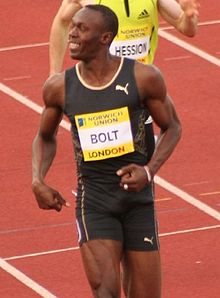

|
 |
|---|---|
| Wikipedia | Wikipedia(new) |
OJ, CD, OLY (/ˈjuːseɪn/;[12] born 21 August 1986) is a retired Jamaican sprinter, widely considered to be the greatest sprinter of all time.[13][14][15] He is the world record holder in the 100 metres, 200 metres, and 4 × 100 metres relay.
An eight-time Olympic gold medallist, Bolt is the only sprinter to win